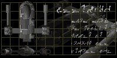
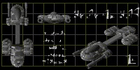
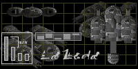

Thank you for downloading Footsteps of Pyrrhus, the most ambitious plug-in yet released for the Ares engine. While no doubt you've already jumped right in and played, here are a few release notes for the literatively inclined.
How to Use:
Firstly, make sure you have Ares 1.2.0 or better. Any lower won't accept plug-ins. Then, just drag-and-drop the "Footsteps of Pyrrhus" icon onto your Ares icon. That's it. If Ares doesn't load up with Footsteps of Pyrrhus enabled, please contact me immediately.
That start-up screen...
Is hard-coded into Ares specially for Footsteps of Pyrrhus. Well, it isn't actually. If you suffer from start-up screen inversion, don't worry, it will not affect game play in any way, and will autocorrect after a fraction of a second in any case.
Mission Four is Impossible!
Watch your scanner as you approach the fleet. You may be enlightened.
The Chi'uata are a complete race- why is there no net play?
A network version is forthcoming. In the meantime, get onto GameRanger and score some MaGleague ladder points.

Where do I go for...
The Axis Software Site can be found at http://www.axisnet.f2s.com. Any feedback, bug reports, comments etc should be mailed to my address, bartons@bigpond.net.au. Alternately, I can be found on the Ambrosia forums, http://www.ambrosiasw.com/webboard/. That's the place to watch for any updates, the release of the network version, and so forth.
Who do I have to thank?
Well, the credits run:
James Barton, a.k.a Sundered Angel- Moi, the creator. Initial Conception, Graphics, Missions, Storyline, Programming, yes, it's all mine.
Jon Woodburn, a.k.a. Zeta- General support, that lovely website, and the work I occasionally called on him for at inconvenient times.
Joveia- Formerly Count Altair El Alemain, this guy nigh singlehandedly caught the bugs I missed, and suggested improvements for most missions. Kudos, man.
Slug- A few hints from one of Ares' coding legends certainly helped me sort out those sticky coding issues.
Mag Steelglass- Much as I hate to say it, I doubt this plug would have ever been finished if it weren't for Mag's constant prodding. Don't make it a habit though Mag.
Andrew Welch- For founding Ambrosia, that paragon of Mac Shareware Companies.
Nathan Lamont- For creating a damn great game. No Ares, no Footsteps.
The whole webboard crew- Just for being a generally great bunch. You know how it is.
